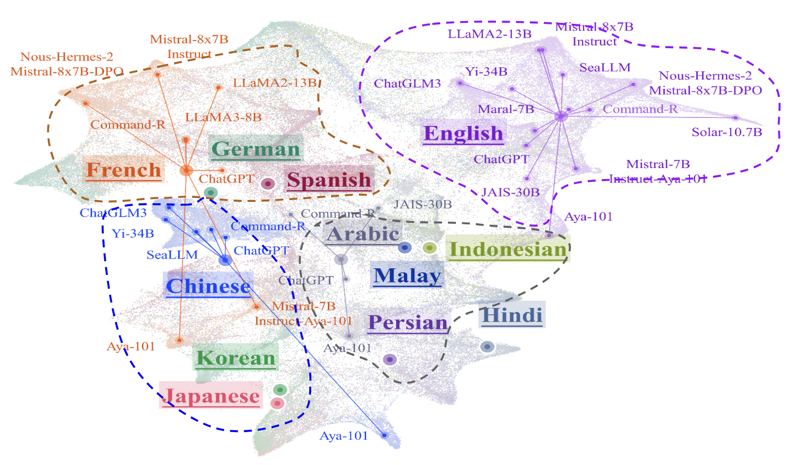

Exploring the Human Value Embedding Map in LLMs

UniVaR is trained through a surrogate task, called value embedding learning, to learn a compact representation that contains maximized mutual information with value-relevant aspects of LLMs while discarding other confounding factors as much as possible. With the incorporation of value-eliciting QAs, UniVaR applies multi-view self-supervised learning by maximizing mutual information across views to ensure capturing the shared value-relevant aspects across the two views while excluding other non-shared factors.